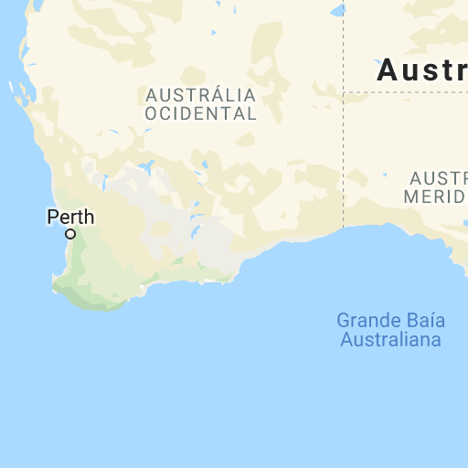
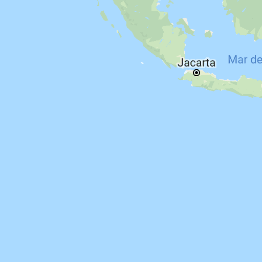
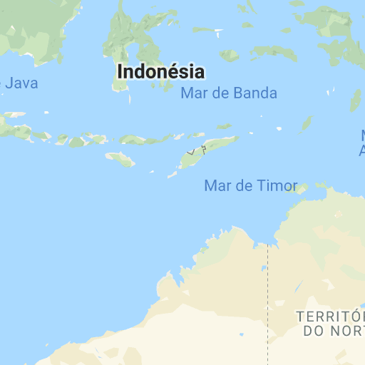
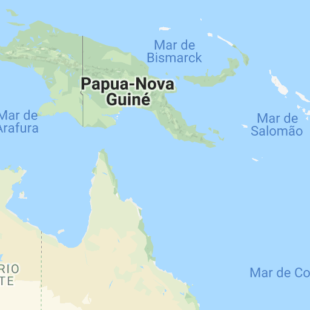
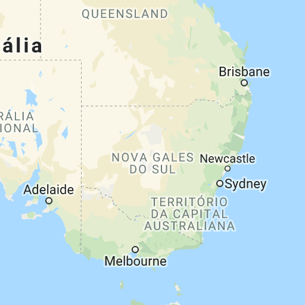

Use ⌘ e role a tela simultaneamente para aplicar zoom no mapa
Dados do mapa
Dados cartográficos ©2018 Google, ZENRIN
Dados do mapa
Dados cartográficos ©2018 Google, ZENRIN
Dados cartográficos ©2018 Google, ZENRIN
Termos de Uso
Informar erro no mapa
Mapa
Relevo
Satélite
Marcadores